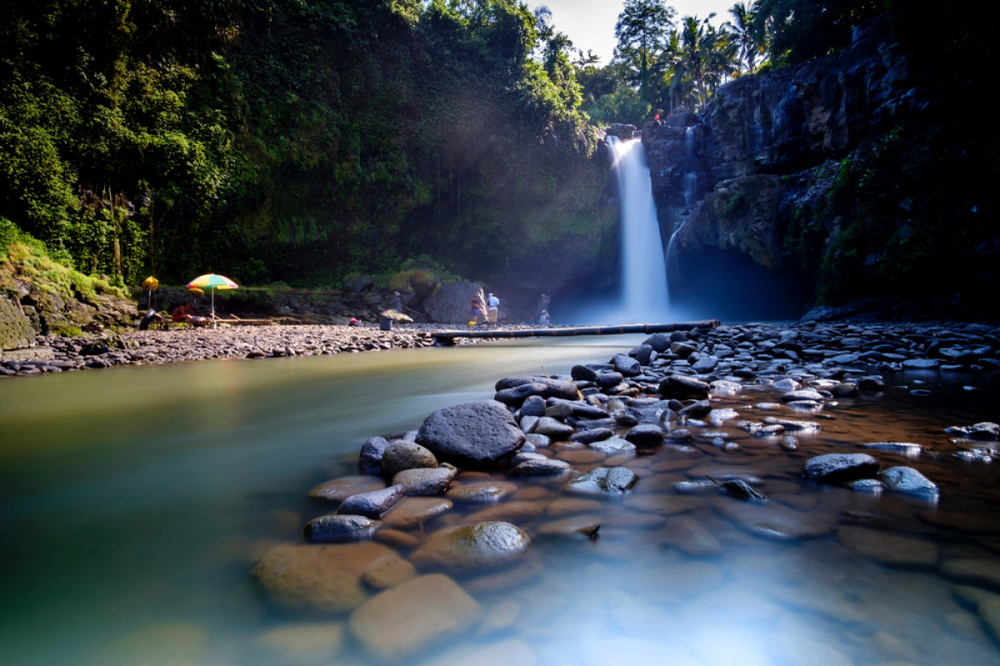
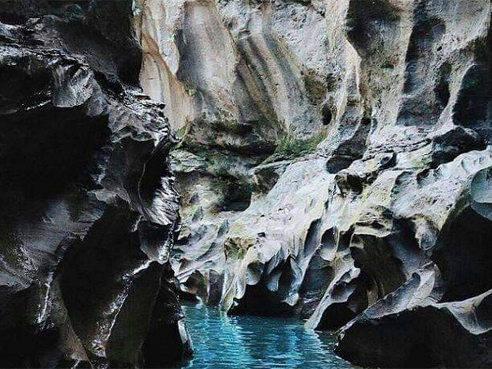
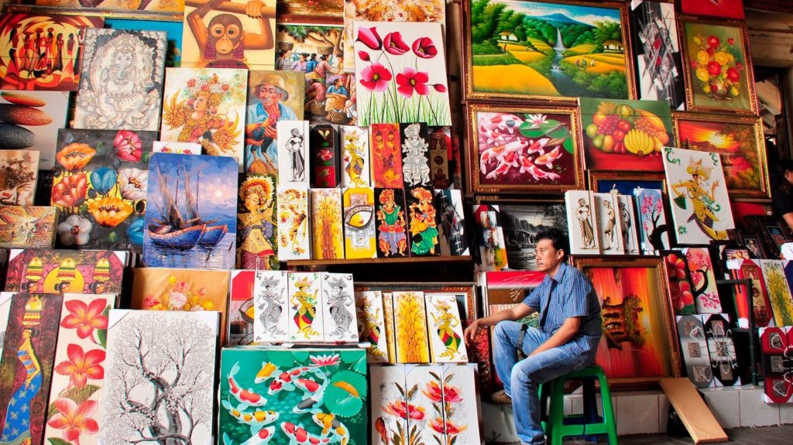

Air Terjun Tegenungan
Air terjun unik dan terletak di daerah Blangsinga, Gianyar.

Hidden Canyon Beji Guwang
Objek wisata menarik yang terletak di daerah Guwang, Sukawati.

Pasar Seni Sukawati
Salah satu pasar yang selalu menjadi tujuan wisata di Bali adalah Pasar Seni Sukawati.
Objek Wisata

Air Terjun Tegenungan
Objek wisata air terjun Tegenungan Gianyar juga memiliki nama lain yaitu air terjun Kemenuh. Karena waterfall lokasinya berada di desa Kemenuh kabupaten Gianyar...
Follow me on the website
Facebook Twitter Youtube